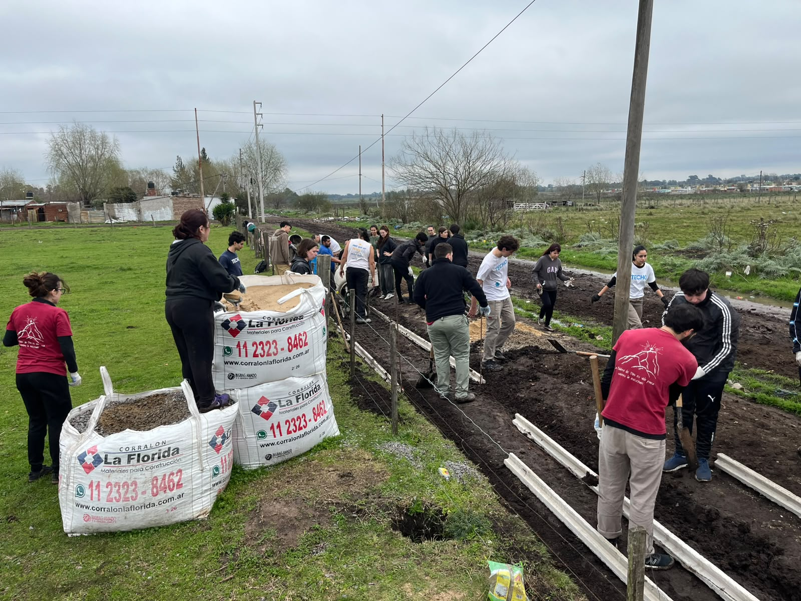
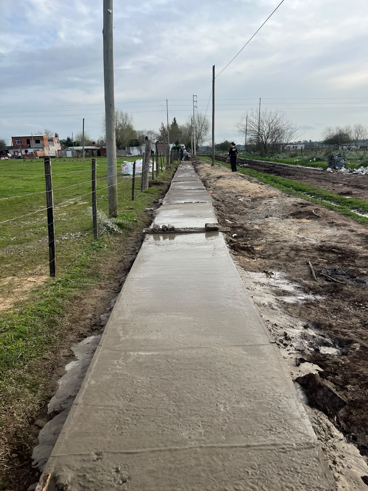
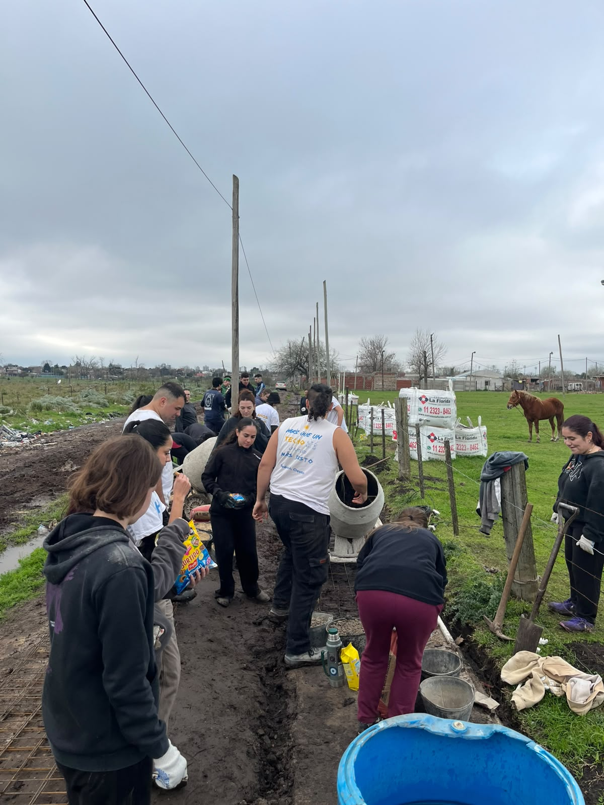
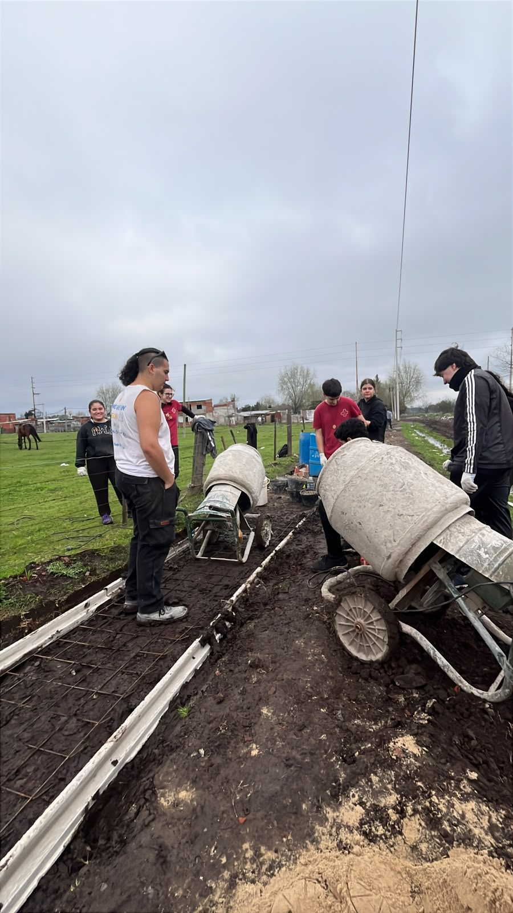
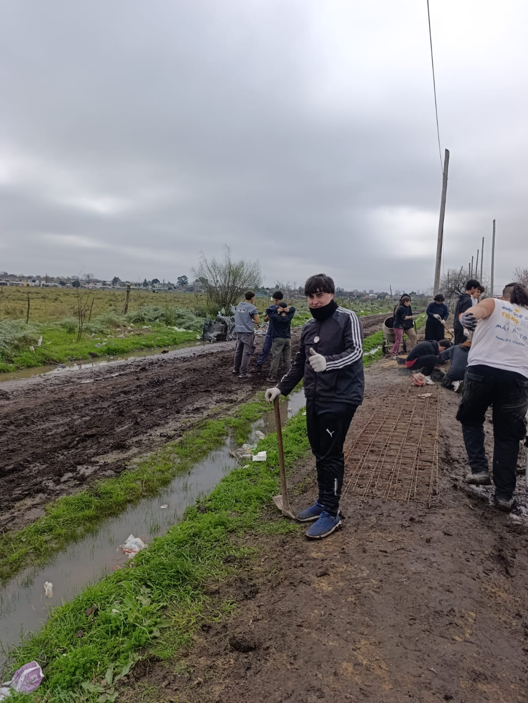

Construcción de veredas
Durante estas jornadas de voluntariado armamos el encofrado, colocamos la malla de hierro y colamos el cemento para construir veredas de acceso en un barrio popular. El trabajo se hizo en equipo, con herramientas simples y mucha mano de obra, transportando arena, piedra y cemento hasta el lugar.
Fotos




